4 Wochenplan 04
…zur Einheit vom 08. & 15.10.2020, Korrelationen, Verteilungen und erstes grafisches Arbeiten (Vorbereitung Inferenzstatistik)
4.1 Lernziele WP04
Nachdem wir uns bereits Grundlagen für die Arbeit mit R und R Studio erarbeitet haben, wollen wir in der vierten Woche nun erste statistische Inhalte bzw. Methoden einführen und diese mit neuen Arbeitstechniken in R Studio ergänzen. Zu ersteren gehören in dieser Woche die bivariaten Zusammenhänge von metrischen Variablen (Korrelation) und verschiedene Zufallsverteilungen. Als Arbeitstechniken wollen wir neu grafische Techniken in R kennenlernen. Der vierte Wochenplan soll uns so nicht zuletzt vorbereiten, das Prinzip der Inferenzstatistik mittels R zu verstehen.
Konkret lassen sich folgende Seminarziele festhalten:
- Sie verstehen, was eine Korrelation von zwei Variablen bedeutet und können bivariate Zusammenhänge in R berechnen und interpretieren.
- Sie können zwei Variablen in einem Streudiagramm darstellen und die Darstellungen interpretieren.
- Sie kennen den Unterschied von Gleichverteilungen und Normalverteilungen und können in R entsprechend verteilte Zufallsvariablen erstellen.
- Sie können metrische Verteilungen in Histogrammen darstellen.
- Sie haben erste Techniken kennenglernt, wie Grafiken erweitert und kombiniert werden können.
- Sie haben sich in R die Grundlagen für ein Verständnis von Inferenzstatistik allgemein und des Stichprobenfehlers im Besonderen erarbeitet.
4.2 Aufgaben WP04
- Sie sollen verschiedene Paare von Vektoren mittels der Funktionen
c(),rep()undseq()definieren, die jeweils unterschiedlich korrelieren. Diese Vektoren – d.h. Variablen – und deren Korrelationen sollen sozialwissenschaftlichen Phänomenen entsprechen. Berechnen Sie jeweils den Korrelationskoeffizienten.
Ein Paar von Vektoren (mit je einer “Länge” von rund 100) soll eine Korrelation von ca. 0.4 aufweisen (…ein Beispiel von Frau Kurmann).
x1 <- c(seq(4100,14000,100))
y1 <- c(rep(2, 5), rep(1, 7), rep(4, 18), rep (5, 35), rep(3, 25), rep(6, 10))
cor(x1, y1)## [1] 0.3768417Ein Paar von Vektoren (mit je einer “Länge” von rund 100) soll eine sehr starke Korrelation aufweisen (…ein Beispiel von Herr Ineichen).
x2 <- c(1,1,1,1,1, rep(seq(from=2, to=9), each=11),10,10,10,10,10,10)
y2 <- y2 <- c(1,1,1,1, rep(seq(from=2, to=9), each=11),10,10,10,10,10,10,10)
cor(x2,y2)## [1] 0.9940175Ein Paar von Vektoren (mit je einer “Länge” von rund 100) soll eine schwache, negative Korrelation aufweisen (…ein leicht angepasstes Beispiel von Frau Stöckli).
#Originalbeispiel
x3 <- c(rep(0:1, 50))
y3 <- c(rep(1, 30), rep(2, 35), rep(3, 21), rep(4, 10), rep(5, 4))
cor(x3, y3) #Dies ergibt leider eine schwache positive Korrelation. Deshalb hier einfach leicht angepasst:## [1] 0.009064354x3 <- c(rep(c(1,0),50))
y3 <- c(rep(1, 30), rep(2, 35), rep(3, 21), rep(4, 10), rep(5, 4))
cor(x3, y3)## [1] -0.009064354- Nutzten Sie
plot()um die Verteilungen Ihrer drei Variablen-Paare darzustellen. Verweisen Sie im Titel und in den Achsenbeschriftungen auf das sozialwissenschaftliche Phänomen, das Sie darstellen.
Im Folgenden werden die drei Plots der Korrelationen dargestellt. Die zweite Grafik wird noch über eine Linie ergänzt, mit der die Korrelation etwas visualisiert wird. ACHTUNG: Der b0-Wert dieser Linie ist lediglich geschätzt (und ebenfalls müssen die Grössenordnungen der beiden Variablen ähnlich sein, damit dies hier funktioniert). Die dritte Grafik wurde über die Funktion jitter() ergänzt. Sie visuliert die einzelne Fälle in einem Plot über eine leichte, künstliche Streuung der Werte.
#Plot der ersten beiden Vektoren
plot(x1/1000, y1,
main = "Korrelation Einkommen und Anzahl Zimmer",
xlab = "Einkommen in CHF",
ylab = "Anzahl Zimmer im Haushalt")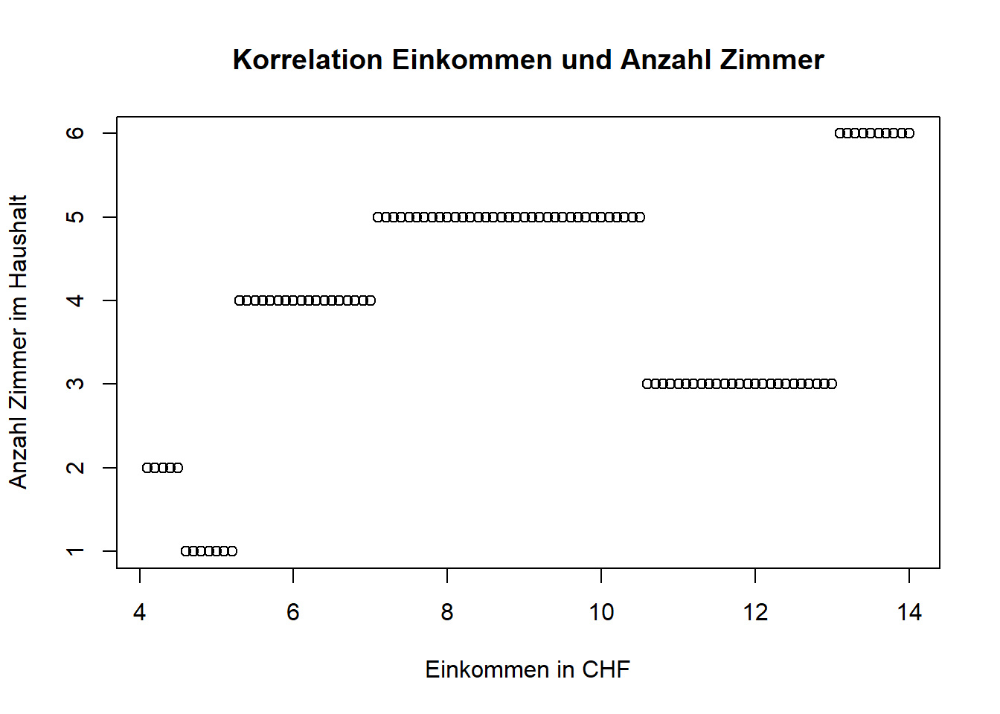
#Plot der zweiten beiden Vektoren
plot(x2, y2, xlim = c(0,18),
main = "Korrelation Alters- und Schuljahre",
xlab ="Alter in Jahren", ylab = "bisherige Schulzeit in Jahren (ohne Kindergarten)" )
abline(a = 0.5, b = cor(x2,y2), col = "red")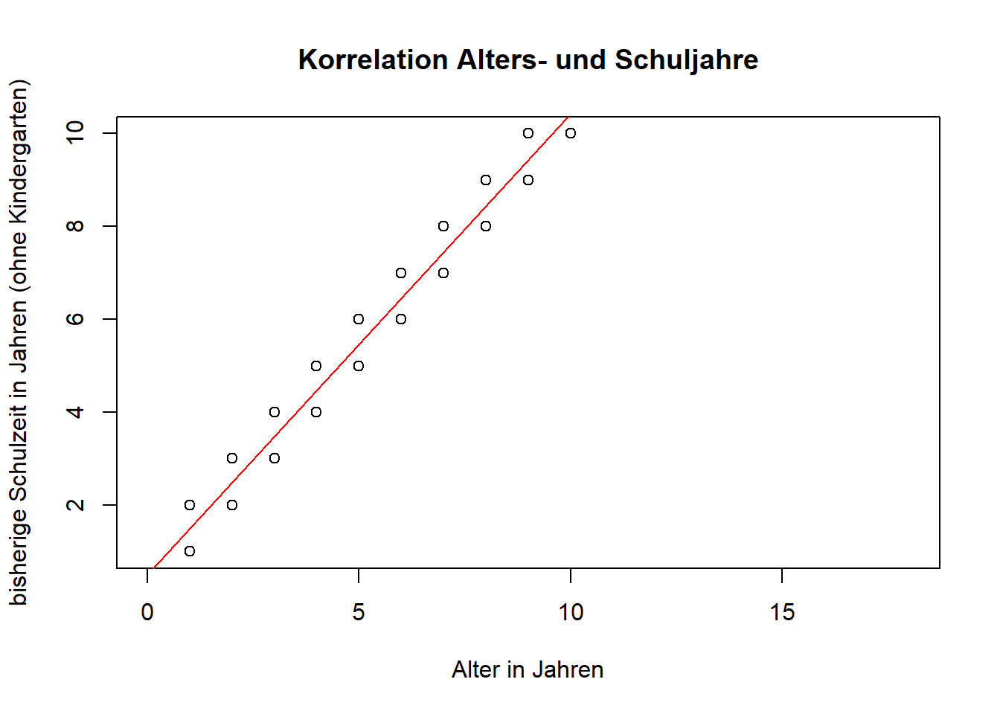
#Plot der dritten beiden Vektoren
plot(jitter(x3), jitter(y3), main = "Korrelation Geschlecht und Einkommen", xlab = "Geschlecht", ylab = "Einkommensklasse")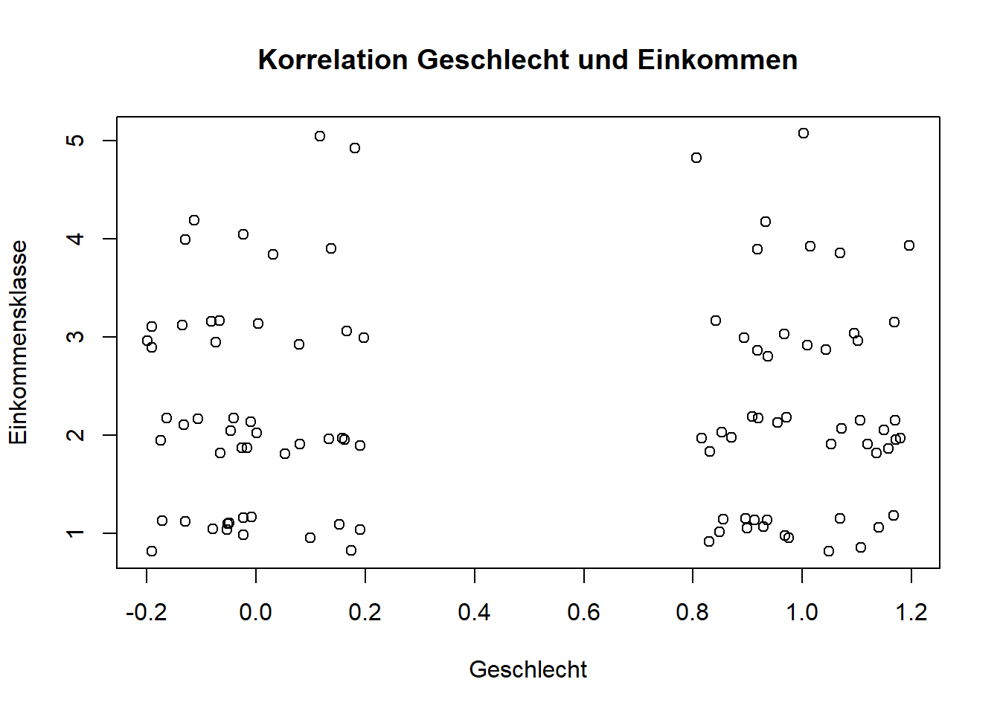
- Erstellen Sie je einen Vektor für eine Gleichverteilung mittels
runif()und für eine Normalverteilung mittelsrnorm(). Diese Vektoren sollen als Variablen Körpergrössen repräsentieren. Erstellen Sie die beiden Vektoren in unterschiedlichen Längen, und zwar…
- …mit je 10,
- …mit je 30
- …und mit je 1000 Fällen.
Im Folgenden werden die in der Aufgabe verlangten Verteilungen als Histogramme dargestellt. Insbesondere bei grösseren Fallzahlen werden so die Eigenschaften der Verteilungen deutlicher:
Bei der Gleichverteilung hat jede Ausprägung dieselbe Auftrittswahrscheinlichkeit. Das heisst, dass jede Körpergrösse zwischen Minimal- und Maximalwert mit derselben Häufigkeit vorkommt. Dies entspricht aber nicht der empirischen Realität von Körpergrössen.
Bei der Normalverteilung gruppieren sich die meisten Werte um den Mittelwert von 170cm, während kleine und grosse Werte mit zunehmender Abweichung immer weniger häufig auftreten. Dies wiederum entspricht stärker der tatsächlichen, empirischen Verteilungen von Körpergrössen. Unterschieden werden die Normalverteilungen auch in der Funktion rnorm() über die beiden expliziten Parameter des arithmetischen Mittels und der Standardabweichung (Diaz-Bone 2019, 140f).
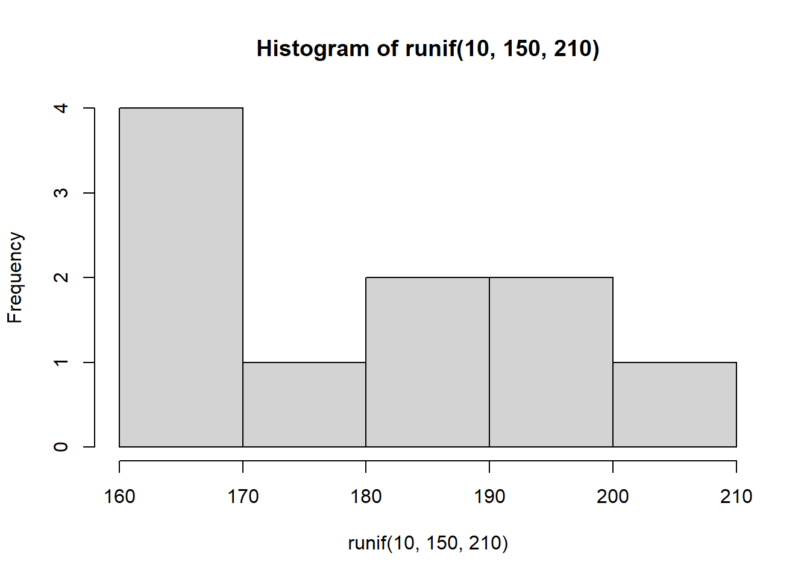
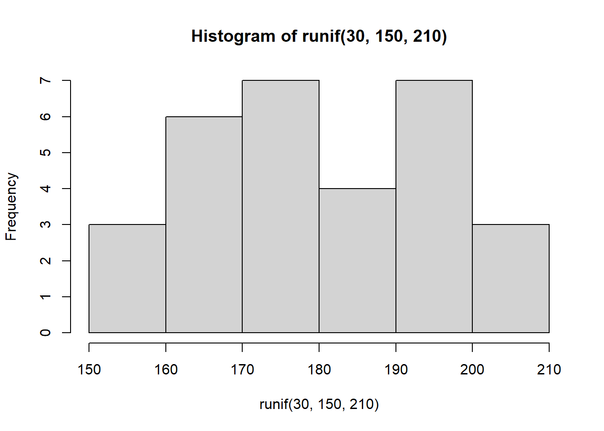
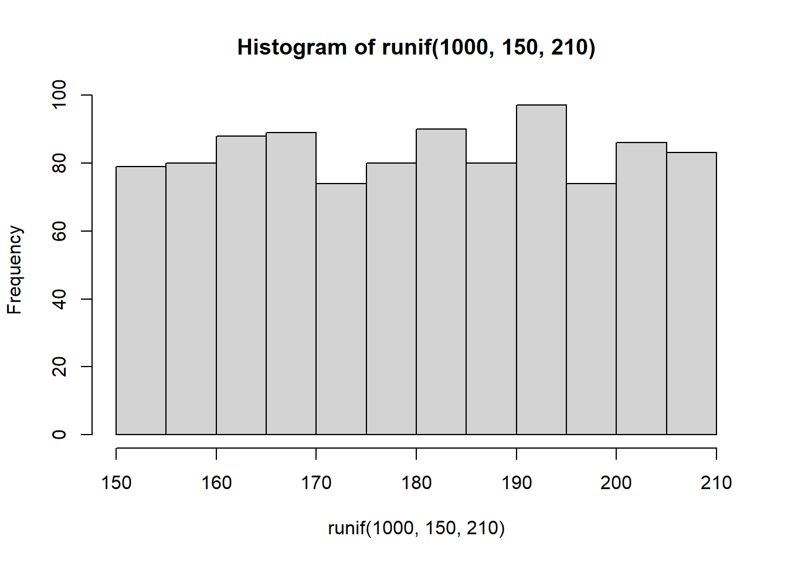
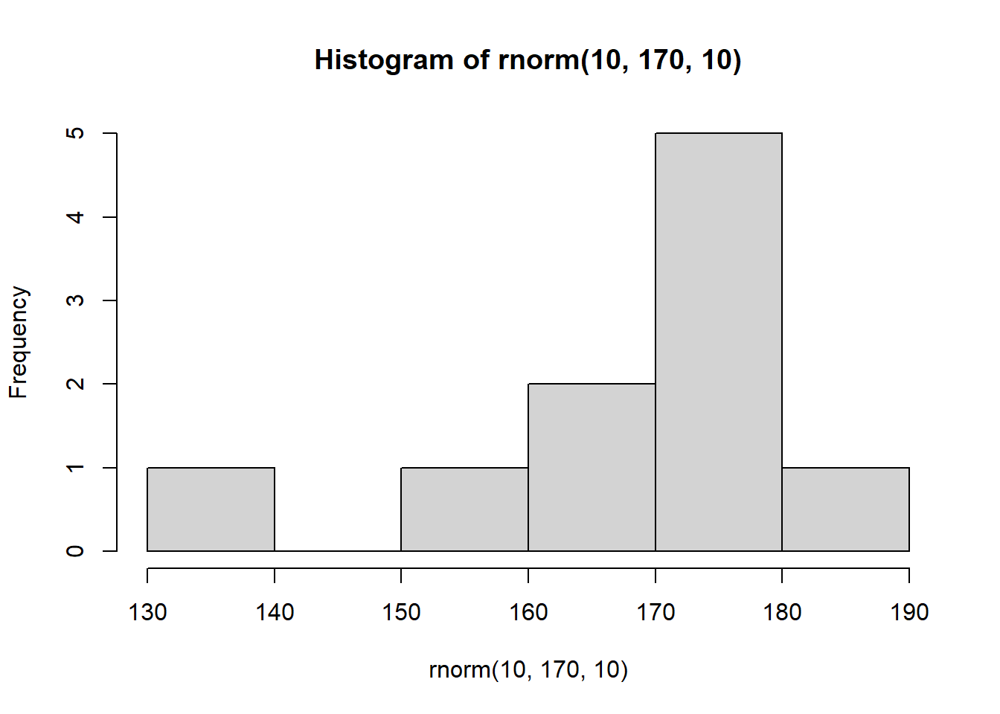
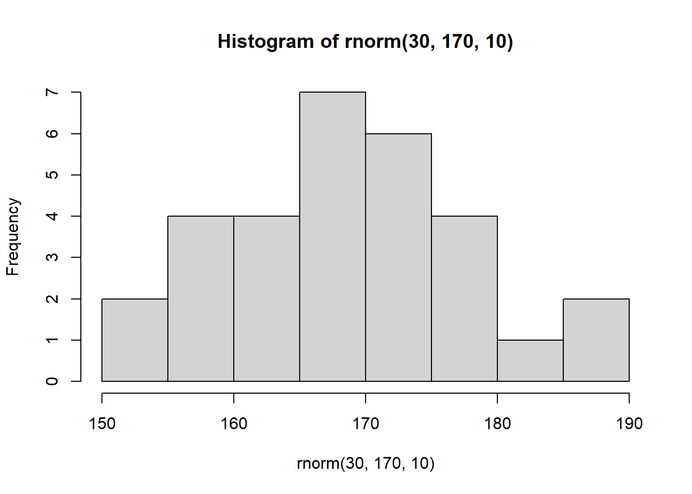
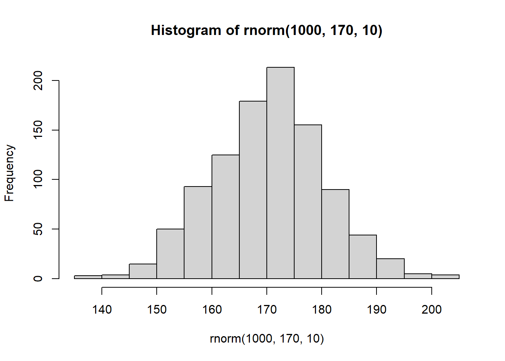
Als Ergänzung:runif und rnorm() werden noch von der Funktion rbinom() ergänzt, die zufällige binomiale Verteilungen erstellt. Dies sind Verteilungen die Ihnen angeben, ob ein Ereignis bei einer bestimmten Wahrscheinlichkeit eingetreten ist oder nicht. Damit kann zum Beispiel aufgezeigt werden, wie oft Sie bei zehn Münzwürfen Kopf bekommen (Beispiel I), oder auch wie oft Sie bei dreimal würfeln mit zwei Würfeln eine Sechs erzielen (Beispiel II).
## [1] 1 0 0 0 1 1 1 0 0 1## [1] 0 1 1- Als nächstes sollen Sie die beiden Verteilungen aus der Aufgabe 4, die 1.000 Fälle aufweisen, grafisch darstellen.
- Nutzen Sie die Funktion für Histogramme, um die beiden Verteilungen darzustellen. Die beiden Histogramme sollen dieselbe Spannbreite in der x-Achsen haben und jeweils 10 Klassen aufweisen. Wählen Sie je eine Farbe für die Gleich- und Normalverteilung.
- Über die Funktion
abline()kann dem aktuellen Plot eine Linie hinzugefügt werden. Fügen Sie jeweils einem Histogramm den Mittelwert der anderen Verteilung als vertikale Linie hinzu (ebenfalls in der entsprechenden Farbe). - Bonusaufgabe: Das Argument
add = TRUElässt Sie eine neue Grafik über die aktuelle Grafik legen. Versuchen Sie, auf diese Art Ihre beiden Histogramme in einer Grafik darzustellen.
Die folgenden Histogramme zeigen die beiden Verteilungen, inklusive den Mittelwerten der jeweils anderen Verteilung als horizontale Linie. Um diese Linie besser ersichtlich zu machen wurde sie mittels des Arguments lwd breiter gemacht.
hist(runif(1000,150,210), breaks = 10 , xlim = c(140,220), col = "blue", main = "Körpergrösse, gleichverteilt")
abline(v = mean(rnorm(1000, 170,10)), col = "green", lwd = 5)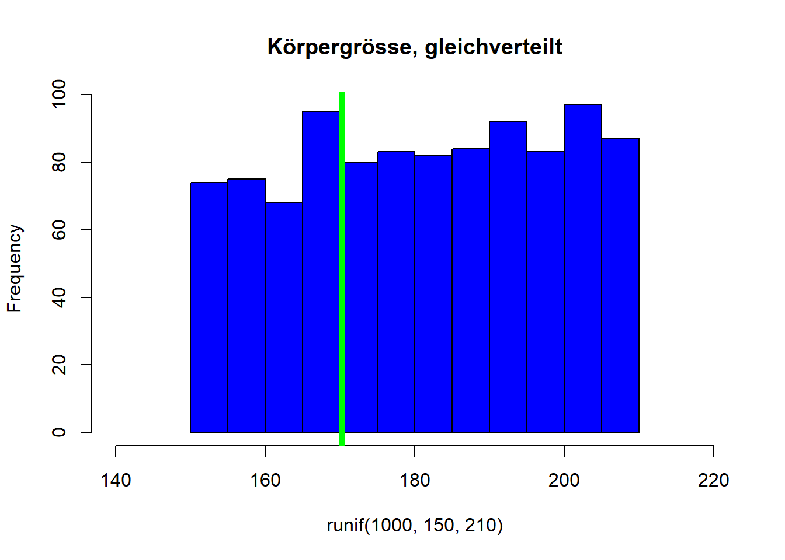
hist(rnorm(1000, 170,10), breaks = 10 , xlim = c(140,220), col = "green", main = "Körpergrösse, normalverteilt")
abline(v = mean(runif(1000,150,210)), col = "blue", lwd = 5)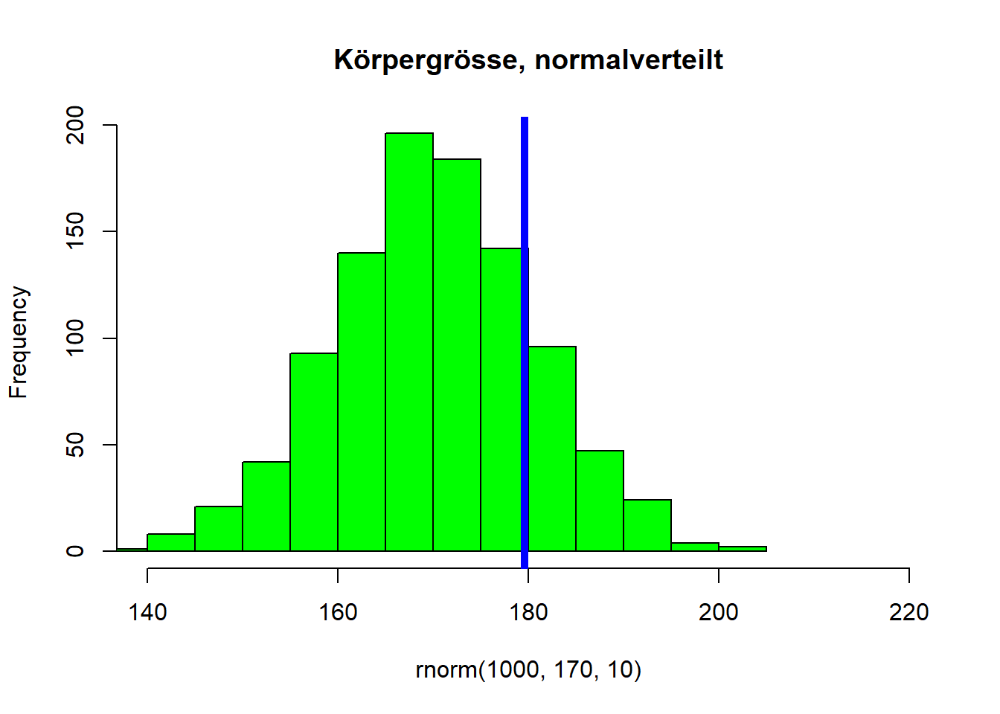
Der nachfolgende Code generiert nun die sich überlagernden Histogramme über das Argument add = T in der zweiten Grafik. Zusätzlich muss noch bei der Darstellung der Gleichverteilung die y-Achse angepasst werden, da die Normalverteilung Klassen mit höheren Häufigkeiten aufweist. Weiter wurde über die rgb() Funktion die Farbei “grün” transparent gemacht (vgl. auch hier).
hist(runif(1000,150,210), breaks = 10 , xlim = c(140,220), ylim = c(0,200), col = "blue", main = "Körpergrösse, gleichverteilt und normalverteil")
hist(rnorm(1000, 170,10), breaks = 10 , col=rgb(0,255,0, max = 255, alpha = 125), add = T)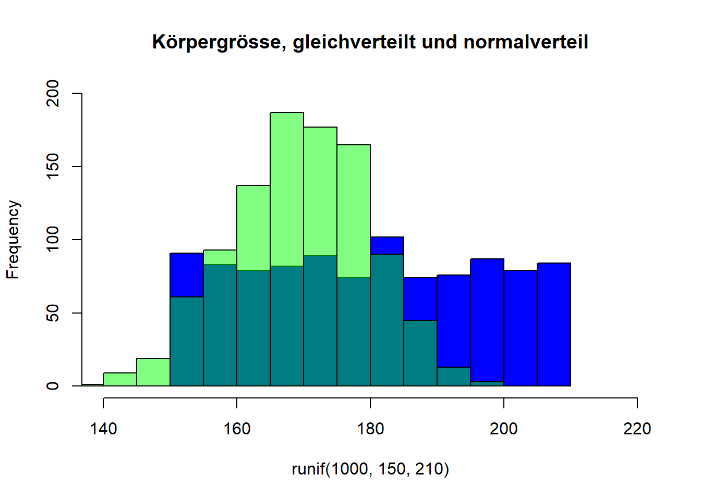
4.3 Hinweise für den Wochenplan 05
Im Rahmen des Wochenplans 05 und der dazugehörigen Falllösung wird das Zugreifen auf Daten (Indizieren und Subsetting) sowie die sogenannte if-Schlaufe relevant. Der folgende Abschnitt zeigt nochmals kurz die Elemente, die am Ende der Einheit vom 15.10.2020 eingeführt wurden.
Beim Zugreifen auf Daten – das heisst dem Indizieren – und dem Erstellen von Teildatensätzen – dem Subsetting – werden drei verschiednen Weisen unterscheiden.
[ ]: Die erste Art und Weise dies zu tun ist über die Verwendung von eckigen Klammer (vgl. Manderscheid 2017, 57ff).
## [1] 5## [1] 1## [1] 20## data frame with 0 columns and 6 rows$: Die zweite Möglichkeit auf Datenzuzugreifen ist der Dollar-Operator $. Damit wird ein Dataframe als Liste angesprochen und die Funktion gibt einen Vektor (bzw. eine Variable) zurück (vgl. Sauer 2019, 59).
## [1] 1 2 10 5 13 20which(): Die dritte Weise um Daten zu indizieren bildet die which()-Funktion die danach fragt, welche Fälle einer bestimmten Bedingung entsprechen.
## [1] 6Wie bereits bei der which()-Funktion ersichtlich lassen sich diese drei Varianten natürlich kombinieren. Im folgenden Beispiel wird etwa ein Teildatensatz erstellt, in dem alle Fälle enthalten sind, die beim vektor1 einen Wert von 20 aufweisen (beachten Sie die doppelten Gleich-Zeichen bei der logischen Bedingung).
t_datensatz <- datensatz[which(datensatz$vektor1==20),]
t_datensatz <- datensatz[datensatz$vektor1==20,] #derselbe Befehl, einfach ohne which() auszuformulieren
Neben dem Zugreifen auf Daten findet sich auch eine Teilaufgabe in den Falllösungen 05, in der Sie eine eigenen if-Schleife programmieren sollen. Schleifen ermöglichen es, dass bestimme Funktionen (Schleifeninhalt) mehrmals ausgeführt werden können. Die Häufigkeit dieser Ausführung wird in einer Schleife über eine Bedingung definiert (Schleifenkontrolle). Sie für weitere Ergänzugen zu Schleifen auch Manderscheid (2017) auf S.206f, hier, und….
Hier drei Beispiele für eine solche if-Schleife:
## [1] 0
## [1] 1
## [1] 2
## [1] 3
## [1] 4
## [1] 5## [1] 1 2 10 5 13 20
## [1] 1 1 1 1 2 1## [1] 1 2 10 5 13 20
## [1] 1 1 1 1 2 1References
Diaz-Bone, Rainer. 2019. Statistik Für Soziologen. Konstanz: UVK.
Manderscheid, Katharina. 2017. Sozialwissenschaftliche Datenanalyse Mit R. Eine Einführung. Wiesbaden: Springer VS.
Sauer, Sebastian. 2019. Moderne Datenanalyse Mit R: Daten Einlesen, Aufbereiten, Visualisieren, Modellieren Und Kommunizieren. Wiesbaden: Springer VS.